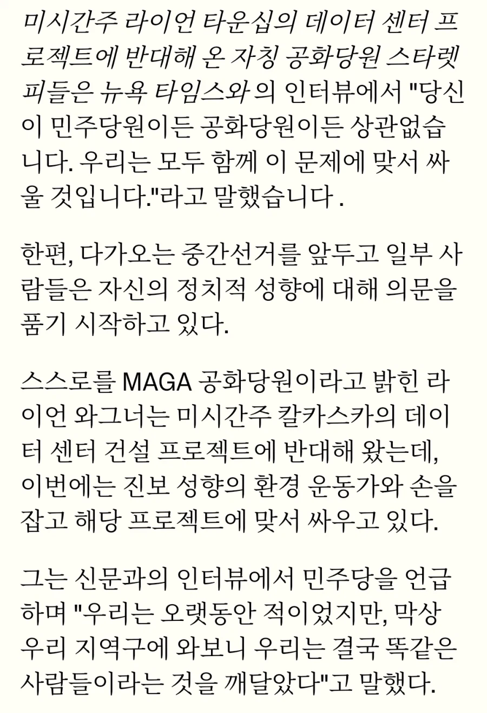

마가-환경운동가 연합 탄생
??? : 어쩔 수 없군 이번만 임시동맹이다!

마가-환경운동가 연합 탄생
??? : 어쩔 수 없군 이번만 임시동맹이다!
소음이랑 광공해는 어케 해결할수 있을거 같은데
기준치 이하로 낮추더라도 24시간 계속 들린다면 그것도 사람 미치게 만들 듯
수많은 정책에 대해서 정당과 개인의 방향이 항상 일치할 수가 없는데, 정당만 보고 투표하는게 개 병신이지.
근데 우리도 그렇고 미국도 그렇고 아예 데이터센터 전용 산단을 꾸리면 안되는건가?? 누구 말마따나 고용도 별로 없는데 일반적인 산단보다 출퇴근 대책 마련에서 훨씬 자유로울거 아니야. 물론 그렇다고 뭐 오지에 두잔 소리 아니지만.
그러면 됨
근데 트럼프정부에선 그거보다 로비가 더 싼데?
ㅋㅋㅋㅋㅋㅋㅋㅋ 아 그렇구나 ㅋㅋㅋㅋㅋㅋㅋㅋㅋ
그게 돈든다고 싫어서 안 한 결과임
아 아무튼 민주당 때문에 주가 떡락했다고 ㅋㅋㅋㅋ 역시 트럼프가 선녀였다고 ㅋㅋㅋㅋㅋㅋ 중국 이기려면 트럼프 밖에는 없다고 ㅋㅋㅋㅋㅋ (트럼프가 진핑이한테 설설 기는 모습을 외면하며)
내가 예상했던 조정보다 존나 세서 문제긴 한데
좆람푸 이후 바이든때 금리 인상 생각해보면 지금 이만하게 처맞은게
3년후 좆람푸발 유가인상 물가인상 주식버블이 다 같이 한 방에 터지는것보단 싸게 먹힐거 같은데
금마들은 안 듣겠지?
소음 개오바긴하더만 시발 어케살어 24/7 내내 층간소음 이상급인데 ㅋㅋ
발목잡지마라 쪽
너야말로 센
트럼프 빠는애들 이해가 안가더라 수천억달러 강제로 미국투자하게하고 관세도 매겨서 지금의 경제위기를 만든건데
1. 능지가 바닥이라 제 허술하기 짝이 없는 망상이 실제라고 믿을 수 있는 사람들
(일례로 서울 어느 경기장 밑에 땅굴이 뚫려있어 러시아산 최신 탱크가 수십 수백대 대기중이라는 사실을 믿는 등신)
2. 한국인이 아니라서 한국이 좆되는게 행복한 새끼들
저 두가지 외에는 이해가 안 가긴 함 ㅋㅋㅋ
관세 올리면 그냥 중국한테 돈 받아오는 건줄 아는 놈들이니까
오나지다로 콘
다른 글에 선동이라던 애들 있더만 마가가 저럴 정도인데 선동 맞음?
선동이라고 링크 달아둔 것도 주민들과 소통하고 해결하겠다고 대표가 발표하는 내용이던데
골프장이나 쳐박살내
고용 없음, 존나 시끄러움, 지역 물이랑 전기 빨아감, 짓지 말라고 해도 로비로 계속 지음
주민이면 개빡칠수밖에 없긴하지